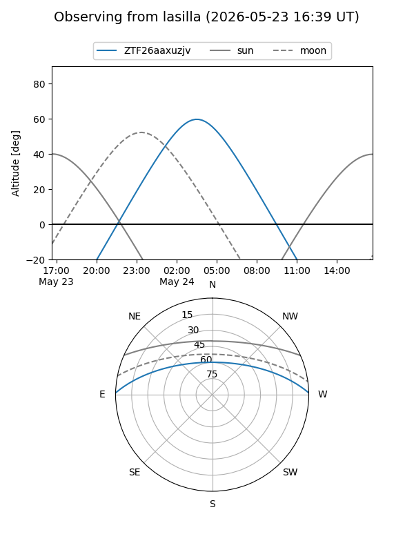
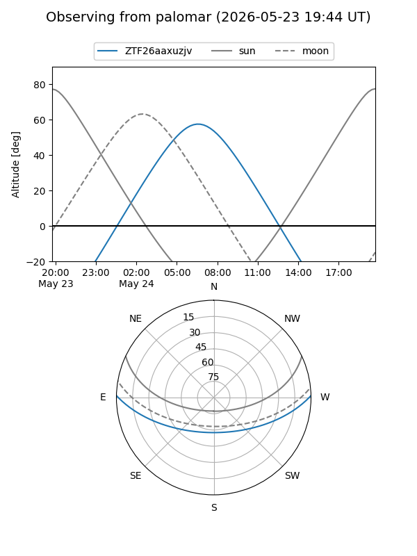

ZTF26aaxuzjv
Target ZTF26aaxuzjv at 2026-05-24 07:02
Aliases and brokers:
lsst-FINK: link
lsst-Lasair: link
lsst-ALeRCE: link
ztf-FINK: link
ztf-Lasair: link
ztf-ALeRCE: link
alt names
ZTF26aaxuzjv (ztf,fink_ztf)
Coordinates:
equatorial (ra, dec) = 223.3985,+1.04792
equatorial (HMS+DMS) = 14:53:35.64,+01:02:52.52
galactic (l, b) = (356.3985,+50.78173)
Flags:
Photometry:
last ztfg=20.02
1 ztfg detections
Lightcurve
Visibility


Additional plots